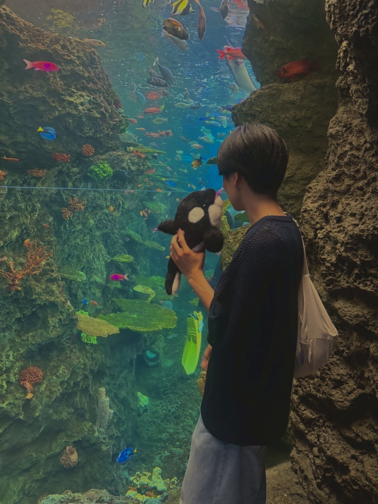
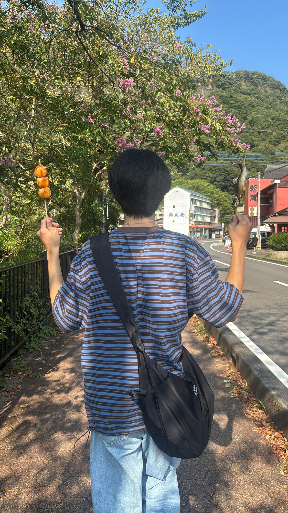
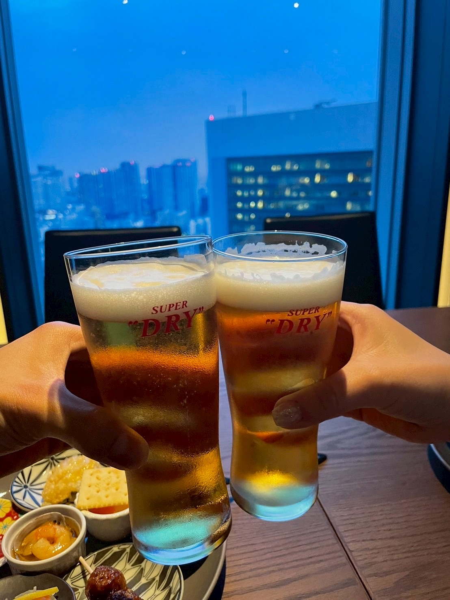
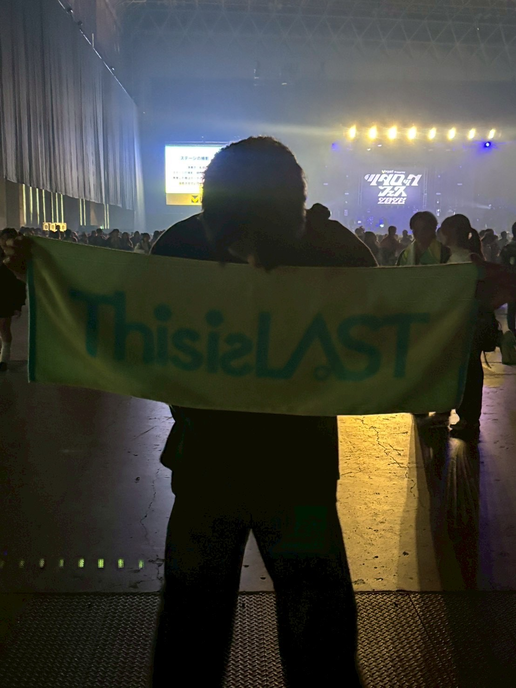
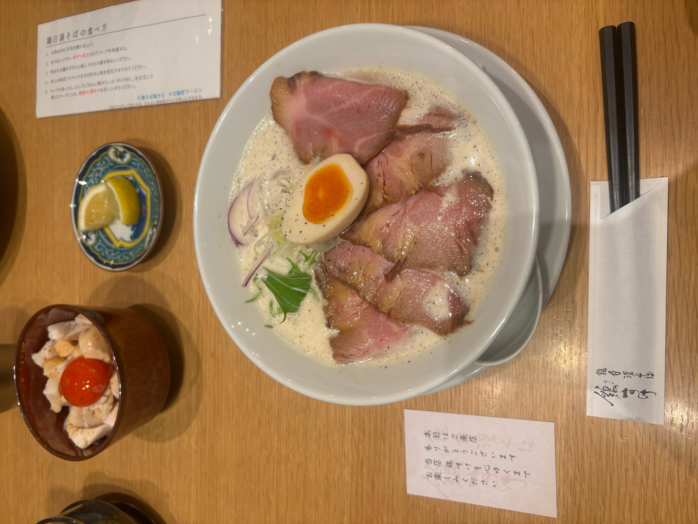
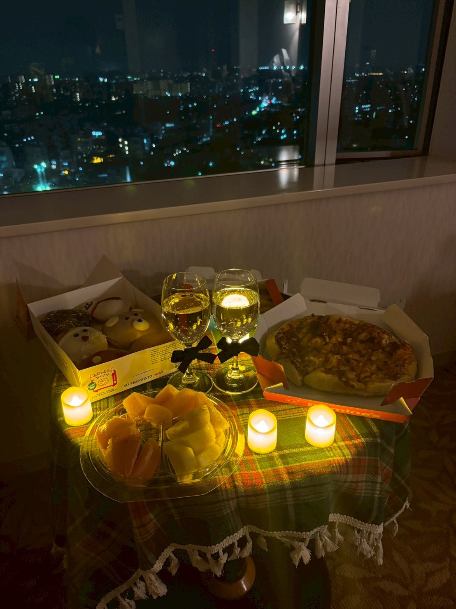

ABOUT ME
scroll
profile
てらき かいと
2004年生まれ。千葉県出身。2023年に千葉工業大学に入学しました。
元々プログラミングに興味があり、大学ではC言語やJavaの講義を履修し、実際に自分でプログラムを組んできました。その中で、成果が目に見えて分かる点に魅力を感じ、Webサイト制作に強い関心を持つようになりました。現在はWebデザインやHTML/CSSを独学で学習し、Web制作に取り組んでいます。
この経験を活かし、ユーザーやクライアントの目線に立ち、使いやすくやすい、そして楽しいWEBサイトを制作できるようなフロントエンドエンジニアを目指します。

skill
- WEBサイト制作
- バナー制作
- プログラミング
Photoshop/figma
HTML/CSS/JavaScript
strange
真面目
お金の管理や約束を必ず守ることを心がけており、部活動や講義も周囲が休みがちな中でも、責任を持って継続して取り組んできました。
没頭力
好きなことに対する没頭力には自信があります。趣味であるカラオケやゲームはもちろん、WEB制作はまさに好きなことであり、時間を忘れて勉強しています。
観察力
周囲の状況や人の表情、声のトーンなどから感情の変化に気づきやすく、相手や場面に応じて臨機応変に行動することができます。
This is a photo that represents me.





